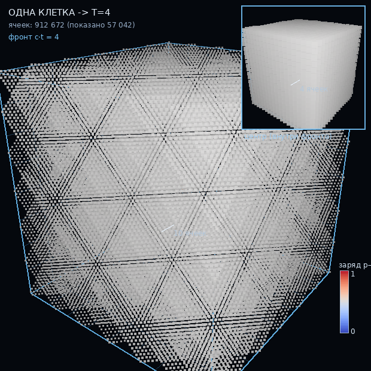
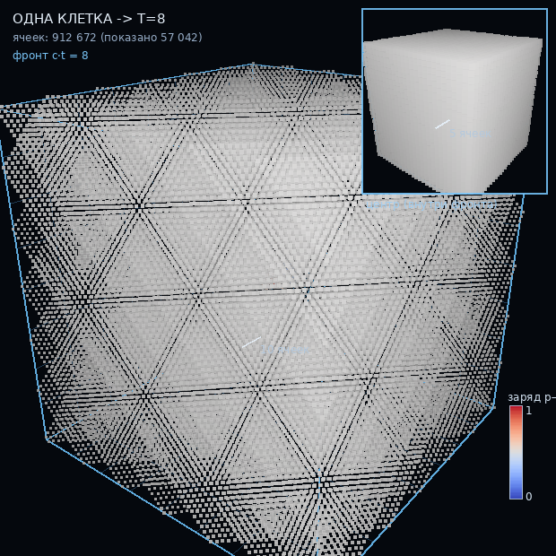
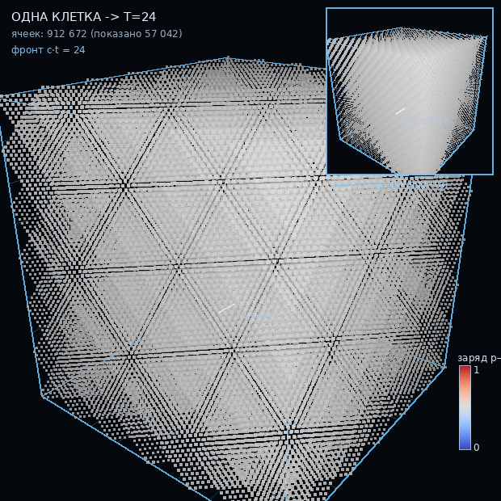

Всё из одной клетки
эмерджентный диполь и квадруполь
Раньше диполь и квадруполь засевались несколькими клетками — это нарушало модель. Теперь зародыш — одна клетка (8 000 000 бит «+» и 8 000 000 бит «−»). Диполь и квадруполь рождаются правилом: зеркальный дрейф, кулоновское поле, отталкивание p–n и шум. Симметричное правило — контроль — ничего не порождает.
01 Правило
Клетка хранит два счётчика p (+1) и n (−1); сумма сохраняется. Поле ∇²φ = −ρ считается FFT из зарядовой плотности ρ = (p−n)/N. Веса шести направлений:
wn,d = 1 − β·6·(φ(x) − φ(x+ed)) − bias·3·bd + rep·6·(p(x) − p(x+ed)) + noise·ξ′d
- bias — зеркальный дрейф: p уходит в +x, n в −x. Это ломает симметрию ОДНОЙ нейтральной клетки и создаёт дипольный момент из ничего (из самого правила).
- rep — короткое отталкивание p от n и наоборот: заряды не схлопываются, связанная пара стабильна.
- noise — случайные флуктуации («кости»): из них рождаются высшие мультиполи — квадруполь.
- β — кулоновский дрейф по градиенту φ.
Доли целочисленные, остаток остаётся в клетке; p и n сохраняются по отдельности.
02 Контроль: симметрия ничего не порождает
При bias = 0, rep = 0, noise = 0 одна нейтральная клетка остаётся нейтральной: поле ρ = 0, φ = 0, движение симметрично. Дипольный момент Dx = 0. Значит, всё, что появляется ниже, рождено правилом, а не начальным условием.
| прогон | bias | rep | noise | K | клеток | Dx | Qxx | sep | blob |
|---|---|---|---|---|---|---|---|---|---|
sym | 0.0 | 0.0 | 0.0 | None | 3 309 | 0.0 | 0.0 | 0.0 | 0.93 |
dipole | 0.4 | 1.0 | 0.0 | None | 9 337 | 7.01 | 0.0 | 12.12 | 0.71 |
dipole-rep2 | 0.4 | 2.0 | 0.0 | None | 9 329 | 6.88 | 0.0 | 11.89 | 0.71 |
dipole-K | 0.4 | 1.0 | 0.0 | 100000 | 7 285 | 4.65 | 0.0 | 11.32 | 0.73 |
noise | 0.2 | 1.0 | 0.8 | None | 7 916 | 3.57 | 0.84 | 5.9 | 0.83 |
noise-bias | 0.4 | 1.0 | 0.3 | None | 9 368 | 6.9 | 0.38 | 11.86 | 0.71 |
03 Эмерджентный диполь
С bias = 0.4, rep = 1.0 одна клетка раскалывается на два облака: p уходит в +x, n в −x, кулоновское притяжение удерживает их, а отталкивание rep не даёт слиться. Получается связанная пара — диполь, рождённый из одной клетки.



К T=24 дипольный момент Dx ≈ 7.0 (в единицах N·ячейка), расстояние между центрами облаков ≈ 12 клеток. Это уже не «засеянный» диполь: он появился из симметричной точки.
04 Квадруполь из шума
Шум noise = 0.8 порождает флуктуации заряда, которые кулоновское поле усиливает в высшие мультиполи: квадрупольный момент Qxx ≈ 0.84 (сид 2). Картинка — пёстрая заряженная структура, а не два аккуратных пятна. «Бог играет в кости» — и из одной клетки получается сложный мультипольный узор.
05 Кулоновское поле

06 Проверки
| Проверка | Статус | Значение |
|---|---|---|
| зародыш — одна клетка во всех прогонах | PASS | p=n=8 000 000 в одной клетке |
| P+N = 16 000 000 во всех прогонах | PASS | [16000000] |
| симметричное правило ничего не порождает (Dx ≈ 0) | PASS | 0.0 |
| диполь рождается из одной клетки (Dx > 5, sep > 8) | PASS | {'Dx': 7.01, 'sep': 12.12} |
| квадрупольный момент рождается шумом (|Qxx| > 0.3) | PASS | 0.84 |
| сила ~ 1/r² (наклон −2 ± 0.35) | PASS | -2.09 |
| картинки созданы | PASS | True |
07 Вывод
- Модель восстановлена: всё из одной клетки; никаких мультиклеточных зародышей.
- Диполь эмерджентен: асимметрия правила + кулон + отталкивание = связанная пара.
- Квадруполь рождается шумом, кулоновское поле усиливает флуктуации.
- Сила ~ 1/r² — подобие кулоновского взаимодействия работает.
- Разреженная сеть по-прежнему не найдена: для неё нужен ещё один масштаб (несжимаемость доменов), но теперь хотя бы мультиполи честно эмерджентны.
08 Файлы и запуск
src/ca3d_coulomb.py — p/n, Пуассон, bias/rep/noisescripts/run_ca3d5.py — 6 прогонов, results/ca3d5/report.jsonscripts/build_ca3d5_report.pyЧасти 1–4: инфляционная решётка, сети и блобы, консервативный битовый автомат, 16 млн бит, обмен и кости.